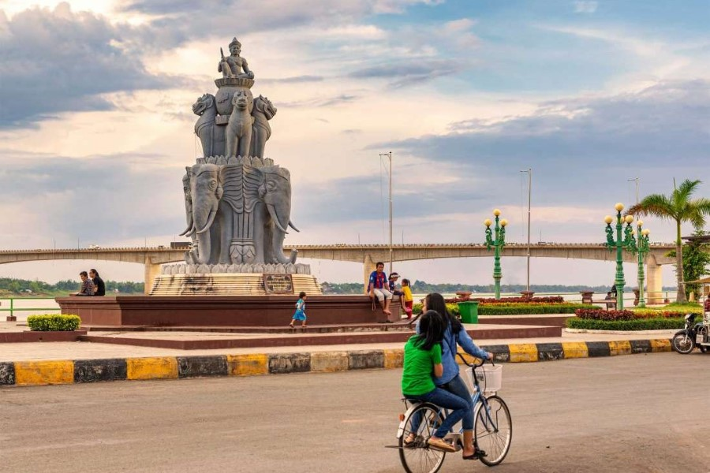

អំពីខេត្តកំពង់ចាម
ខេត្តកំពង់ចាម ស្ថិតនៅភាគកណ្ដាលខាងកើតនៃព្រះរាជាណាចក្រកម្ពុជា និងជាខេត្តមួយដែលមាន ប្រជាជនរស់នៅច្រើន។ ទន្លេមេគង្គហូរកាត់កណ្ដាលខេត្ត ដែលធ្វើឱ្យតំបន់នេះសម្បូរទៅដោយ ដីមានជីជាតិ សម្រាប់វិស័យកសិកម្ម។ ខេត្តនេះល្បីល្បាញដោយសារចម្ការកៅស៊ូ ផ្លែឈើ និងទេសភាពស្រស់ស្អាតតាមដងទន្លេ។
ប្រវត្តិសង្ខេប
កំពង់ចាមជាខេត្តដែលមានប្រវត្តិយូរអង្វែង និងធ្លាប់ជាមជ្ឈមណ្ឌលពាណិជ្ជកម្មដ៏សំខាន់ ដោយសារទីតាំងនៅជាប់ទន្លេមេគង្គ។ ក្នុងសម័យអាណានិគមបារាំង ខេត្តនេះត្រូវបានអភិវឌ្ឍ លើវិស័យដាំកៅស៊ូ និងហេដ្ឋារចនាសម្ព័ន្ធ។ សព្វថ្ងៃ កំពង់ចាមនៅតែជាខេត្តដ៏សំខាន់ ផ្នែកសេដ្ឋកិច្ច កសិកម្ម និងទេសចរណ៍។
កន្លែងទេសចរណ៍សំខាន់ៗ
- ស្ពានឫស្សីកោះប៉ែន
- កោះប៉ែន
- វត្តនគរបាជ័យ
- ចម្ការកៅស៊ូចូប
- ភ្នំហាន់ជ័យ
- មាត់ទន្លេកំពង់ចាម
ទីតាំងភូមិសាស្ត្រ
ខេត្តកំពង់ចាម ស្ថិតនៅភាគកណ្ដាលខាងកើតនៃប្រទេសកម្ពុជា មានព្រំប្រទល់ជាប់ខេត្តកំពង់ធំ ខេត្តកំពង់ឆ្នាំង ខេត្តកណ្ដាល ខេត្តត្បូងឃ្មុំ និងខេត្តក្រចេះ។ ទន្លេមេគង្គហូរកាត់ខេត្តនេះ ដែលបានរួមចំណែកយ៉ាងសំខាន់ដល់វិស័យកសិកម្ម ការដឹកជញ្ជូន និងជីវភាពរស់នៅរបស់ប្រជាពលរដ្ឋ។